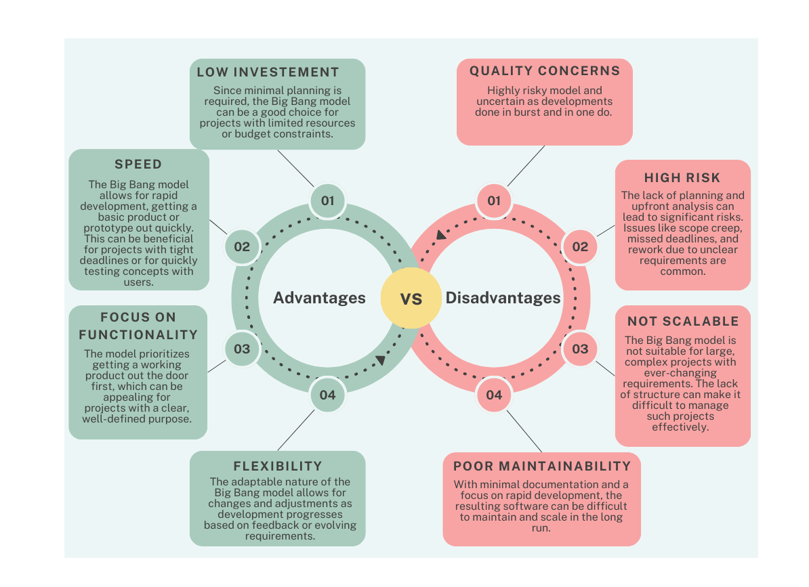

Big Bang mudel on SDLC mudel, kus ei järgita kindlat protsessi. Arendus algab lihtsalt vajaliku raha ja pingutuste sisendiga, ning väljundiks on arendatud tarkvara, mis võib vastata või mitte vastata kliendi nõuetele. See Big Bang mudel ei järgi kindlat protsessi/protseduuri ning nõuab väga vähe planeerimist. Isegi klient ei pruugi täpselt teada, mida ta soovib, ja nõuded rakendatakse jooksvalt ilma põhjaliku analüüsita.
-------------------------------------------------See mudel sobib ideaalselt väikestele projektidele, kus töötab koos üks või kaks arendajat, ning on kasulik ka akadeemiliste või harjutusprojektide jaoks. See on ideaalne mudel toodete jaoks, kus nõuded pole selgelt määratletud ja lõplikku väljalaskekuupäeva pole antud.
Kuid Big Bang mudel on väga kõrge riskiga mudel ning nõuete muutused või valesti mõistetud nõuded võivad viia isegi projekti täieliku tagasipööramise või tühistamiseni. See sobib ideaalselt korduvate või väikeste projektide jaoks, kus riskid on minimaalsed.
-------------------------------------------------  -------------------------------------------------| Head | Vead |
|---|---|
| See on väga lihtne mudel. | Väga kõrge risk ja ebakindlus. |
| Vajab vähe või üldse mitte planeerimist. | Ei sobi hästi keerukate ja objektorienteeritud projektide jaoks. |
| Lihtne hallata. | Kehv mudel pikkade ja pidevate projektide jaoks. |
| Nõuab väga vähe ressursse. | Võib osutuda väga kalliks, kui nõuded on valesti mõistetud. |
| Pakub arendajatele paindlikkust. | |
| On hea õppimisvahend algajatele või tudengitele. | Kasutatud Materjal |